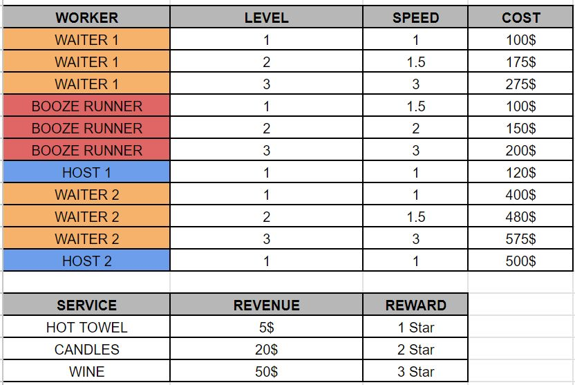
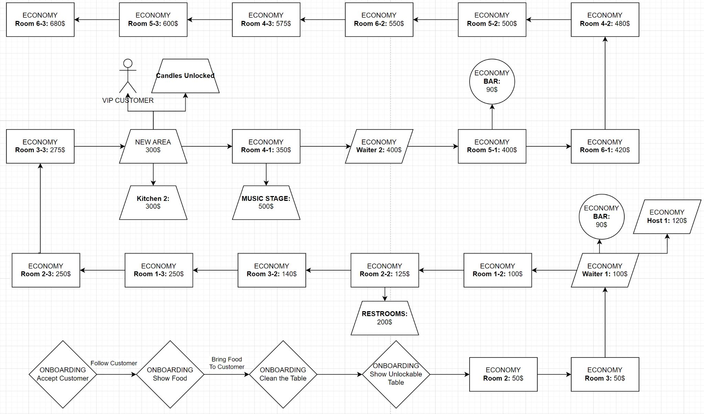
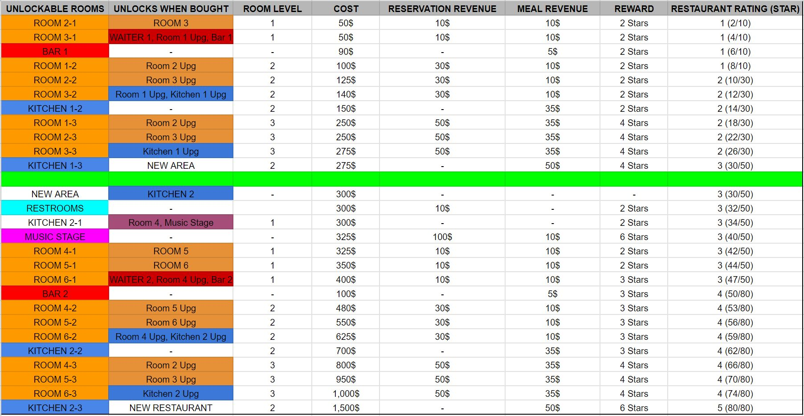
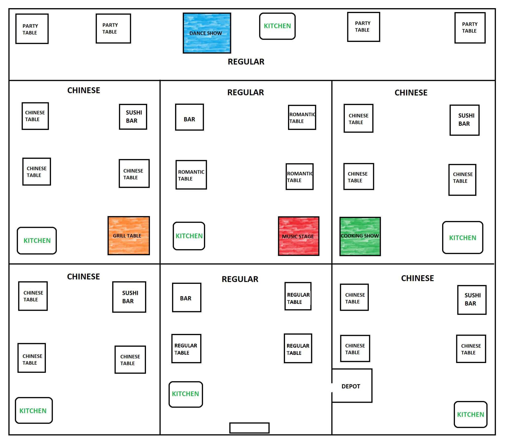
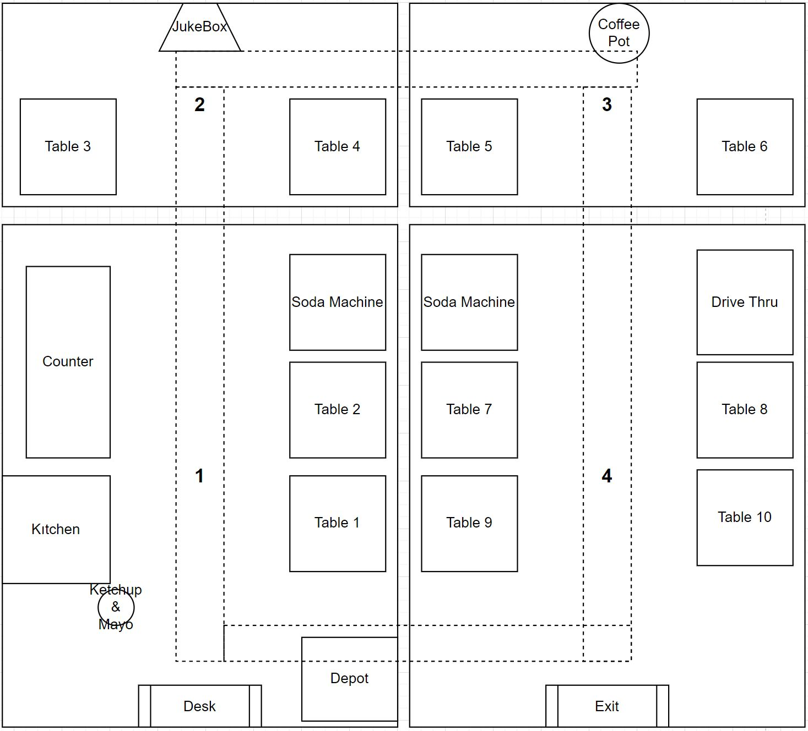
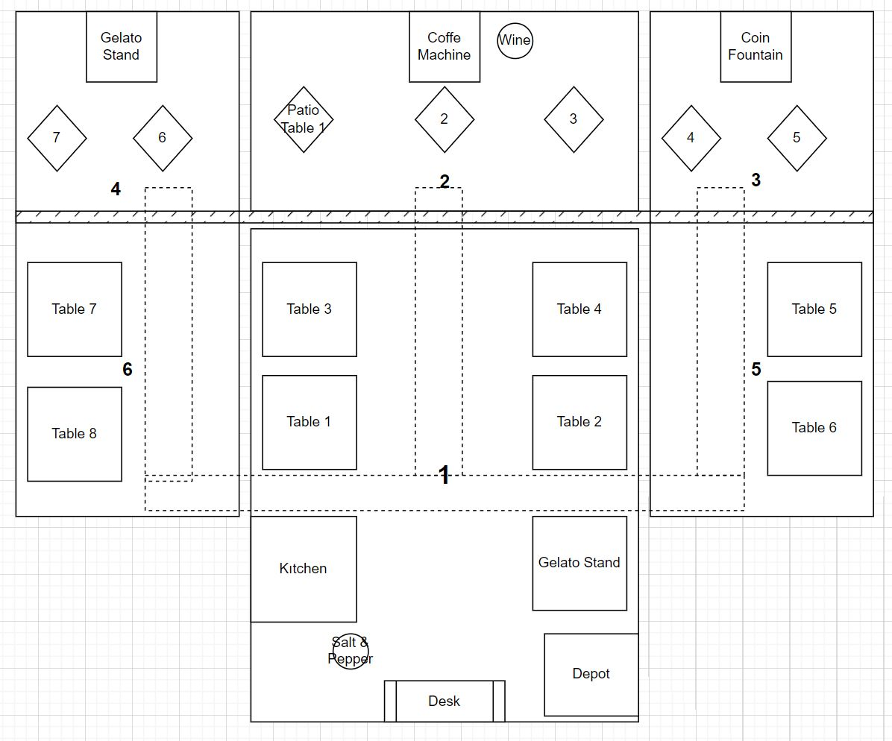
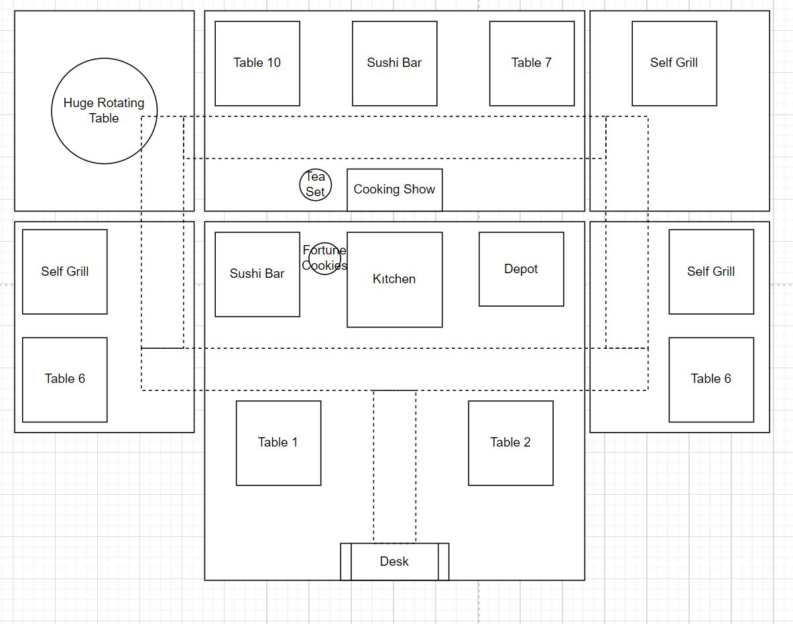
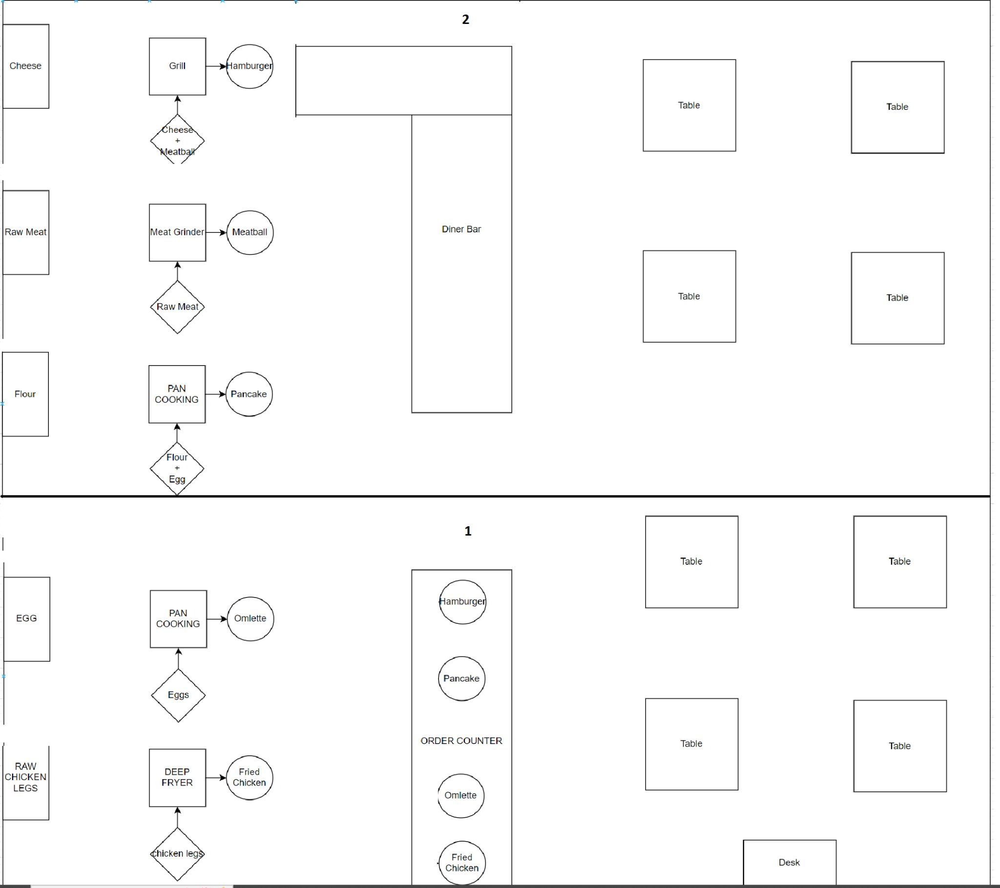

Fancy Restaurant
Hybrid-casual restaurant manager, soft-launched to 300K+ downloads and iterated on live data for 7 months.
What I did
- Core loop: Seat, serve, collect, reinvest — plus hireable staff that run the restaurant for you.
- Economy: Two upgrade trees and rewarded-video boosts tuned to playtime targets.
- Live iteration: Reworked the scope from funnel data, e.g. shortening section 2, where most players quit.
🔒 No playable link or repository: the soft launch has ended, and the publisher NDA covers the build and source code.
How it works
Seven months of reworks. Each step started from funnel data or publisher feedback; below is what the signal was and what I changed.
Core loop and first economy
- Loop: Seat guests, serve them, unlock and upgrade tables, then hire waiters and food runners so the restaurant runs itself. Joystick and stack-carry controls, no lose condition.
- Progression: Every purchase pays stars. The restaurant rating climbs to 5 stars, which finishes the level.
- Planned on paper first: Each unlockable has a cost, what it opens next, its reservation and meal revenue and its star reward, from $50 for the first room to $1,500 for the last kitchen upgrade.
Tuning after the first build: simplified the economy, reordered upgrade areas so they don't all open at once, lowered tips, added a short delay before money is spent so walking over a pad doesn't buy by accident, and replaced the waiter upgrade with a second waiter so faster service is visible.



Shorten the early game
Signal: A management game has no levels, so every table and section unlock fired a "level passed" analytics event. The funnel showed most players had quit by event 12 — the second table of section 2.
To get players past that point sooner, section 2 was shortened and the slow steps were cut:
| Before | After |
|---|---|
| Tables had to be cleaned before seating new guests. | Cleaning removed for a faster, simpler loop. |
| Player chose Romantic or Party table at the second upgrade. | Table types are fixed per section; the upgrade only picks a skin. |
| Crates had to be carried to special tables to prepare them. | Special tables are always ready. |
| No special requests. | Each table type has its own request, e.g. hot towels before the meal. |
- Wayfinding: A compass button points to everything that can be bought, and the camera pans to each newly opened area.
- Curiosity: One special place per section — music stage, cooking show, grill table, dance show — so players wonder what unlocks next.
- Supply runs: Raw fish to the sushi bars, raw meat to the grill and crates to the bar, all carried from a depot.

One restaurant theme per area
Signal: Publisher feedback — food should match the restaurant type, the economy needed some grind, and the game should start smaller.
- Themes: Each new area is a different restaurant, with its own special places and guest requests.
- Smaller start: The first restaurant opens with two seats, and carry capacity starts low and is earned back through upgrades.
| Theme | Special places | Guest requests |
|---|---|---|
| Diner | Self-serve counter, jukebox, drive-thru, soda machine | Ketchup & mayo, coffee refill |
| Italian | Gelato stand, coffee machine, coin fountain | Salt & pepper, wine |
| Chinese | Sushi bar, self grill, cooking show, rotating table | Fortune cookies, green tea |
Each special place earns differently: the drive-thru pays fast because nobody waits for a seat, the jukebox and coin fountain drip small passive income, and the soda machine and gelato stand only earn while they are kept stocked.



Monetization through the economy alone
Brief: Test rewarded video for soft currency. Players who skip videos should take 15–20 minutes longer; players who watch keep the current ~30 minutes. No map or mechanic changes.
I listed where players got stuck and attached a fix or a rewarded video to each bottleneck:
| Bottleneck | Fix |
|---|---|
| Cook speed is fixed and can't keep up as tables are added. | A clock pickup in the restaurant triggers a cook-speed boost. |
| Stars come too fast, so new areas open before upgrades are finished. | An area's star requirement equals the stars its upgrades give; a video-only third upgrade option pays extra stars. |
| Player is short of cash for the next upgrade. | A money case appears when the balance is below the next upgrade cost. |
| Carry capacity is too small to keep up with tables. | A video gives unlimited carry for a limited time; the extra stack is lost when it ends. |
Added in the same scope:
- Restaurant upgrades: Purchase discount, tip income, reservation income, bonus tip for special requests.
- Staff upgrades: Player and waiter stack count; player, waiter, host and cook speed.
- Decoration store: Cosmetic items, some of which add small boosts such as +5% tip income.
Production lines
- Raw materials: Trucks deliver to a counter with a limited stack. Two upgrades: delivery speed, and a carrier who moves raw food to the right station.
- Stations: Three interaction points — drop raw food, stand to cook (until a cook is hired), pick up the result.
- Recipe chains:
Raw Meat → Meatball,Cheese + Meatball → Hamburger,Flour → Dough,Dough + Cheese → Pizza. Intermediate products feed the next station.
